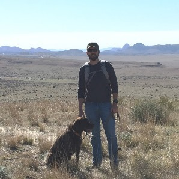

Hi. My name is John. I created this site for publishing projects and to centralize my professional and social web presence.
I live in Austin, TX. I am a geographer and casual developer. I enjoy mountain biking, running, live music, thinking spatially and spending time with my wife. I love the evolution and progression of technology. One of my favorite things to do is travel to new locations throughout the world to learn and experience new cultures. I am annoyed by my chocolate lab Mackdog everyday, but I love him. I like to try and see things from as many angles and views as possible in an attempt to create a pure objective opinion or decision about something. I am a skeptic. I enjoy the effort to finding solutions to problems that will increase efficiency and hopefully make people happier.